When cyclones and floods take down mobile towers, MeshAlive passes your SOS phone to phone and through rescue boats to the district control room. Then it carries the answer back to you.
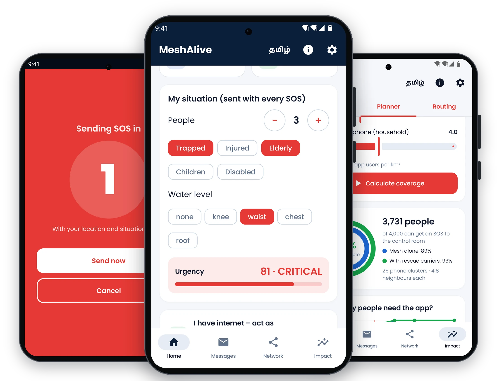
Every cyclone and flood season, whole districts lose mobile coverage, as in the 2015 Chennai floods and Cyclone Michaung in 2023. That happens in the very hours when people most need help.
Trapped families, the elderly and patients can’t call, text or share where they are.
No idea who needs help, where they are, how many people, or who is most urgent.
Offline chat apps don’t reach rescuers, don’t prioritise, and drain the phones that relay for others.
Not just phone-to-phone chat. MeshAlive gets the SOS to rescuers, puts the most urgent first, and brings help back.
One-tap SOS with GPS and a situation report, scored 0–100 for urgency.
Bluetooth and Wi-Fi mesh. Battery-aware routing; most urgent first.
Boats and NDRF teams carry stuck SOS out of dead zones.
The first phone with signal uploads everything to a live map.
Dispatch and evacuation alerts reach phones with no signal.
People, trapped, injured, elderly, children, disabled and water level are set once and sent with every SOS. Each one becomes an urgency score, so a family on a roof is reached before a request for water.
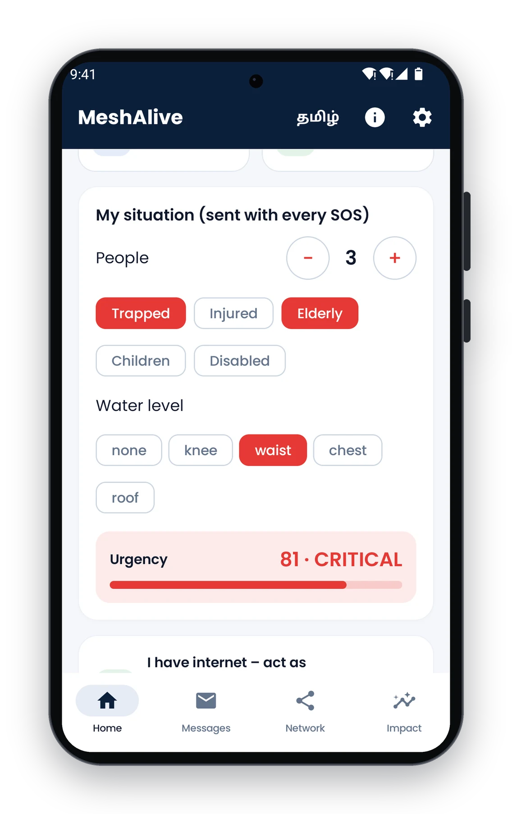
Phones on rescue boats, NDRF teams and ambulances accept SOS that have no route and deliver them when they reach signal.
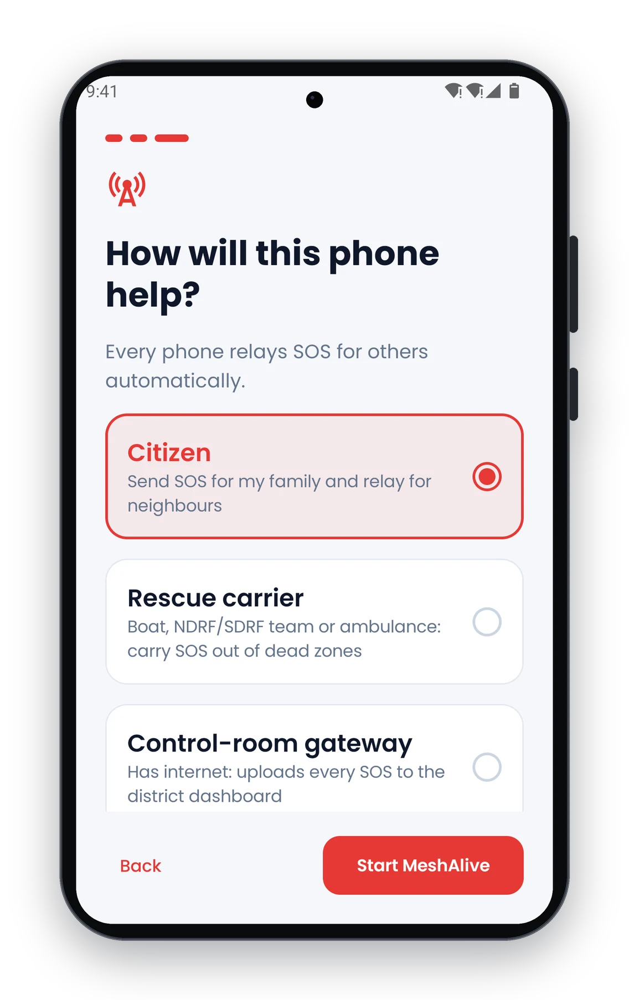
Routing avoids phones about to die: 147× fewer radio transmissions than flooding.
The whole SOS flow in Tamil, with ready-made messages for anyone.
“Rescue team on the way” reaches phones with no signal.
Encrypted messages; control-room commands are digitally signed.
Every SOS gives you time to cancel a stray tap.
The moment any phone finds signal, it uploads every SOS it carries.
Large targets, plain language, a guided setup and full Tamil support. Swipe through the real app.
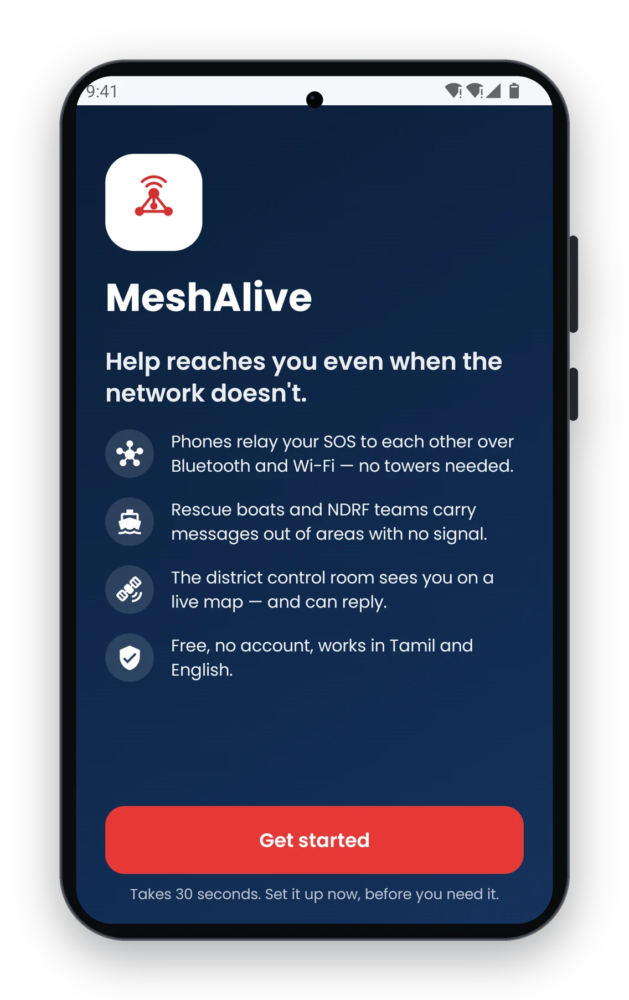
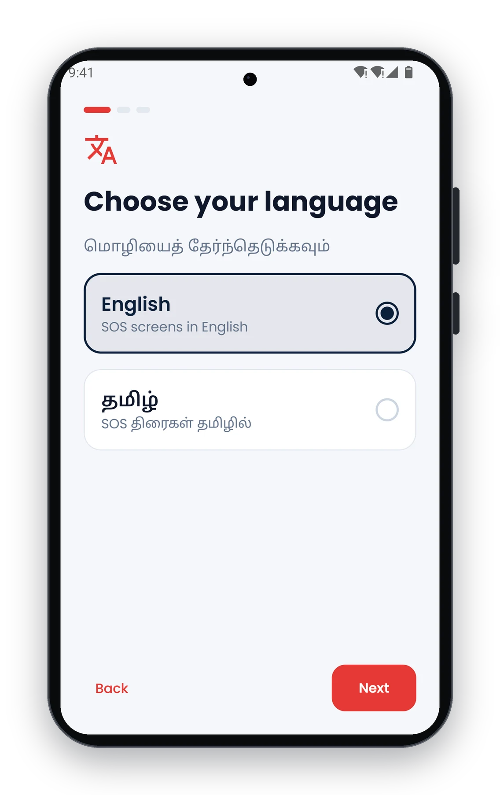
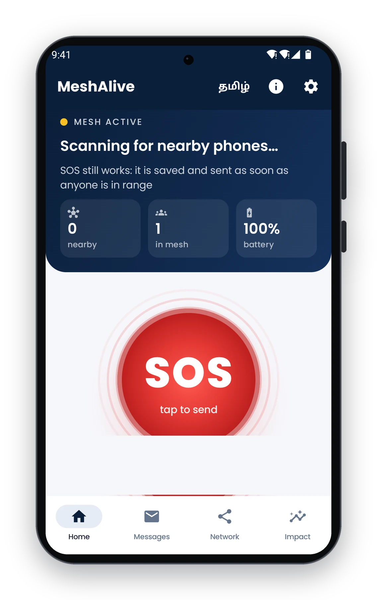
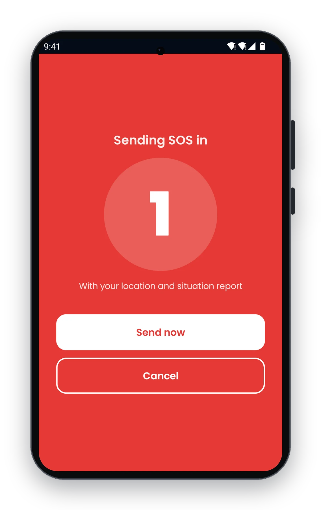
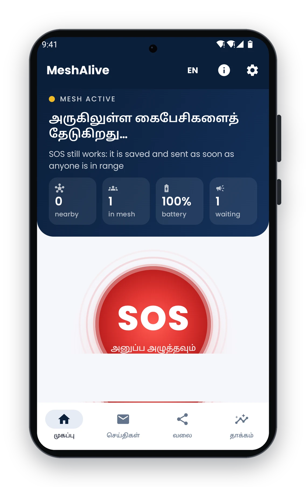
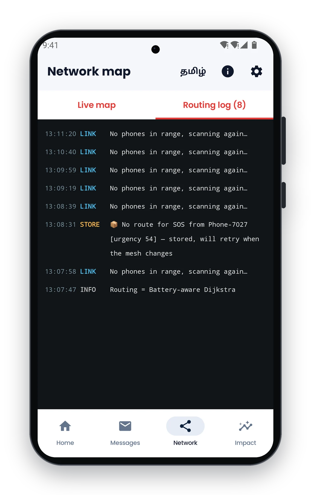
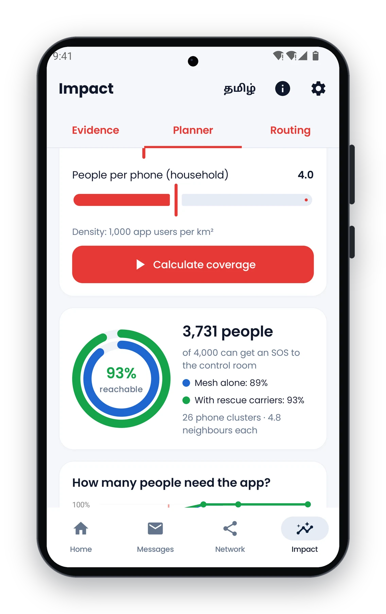
Runs in any browser on the control-room PC, with nothing to install.
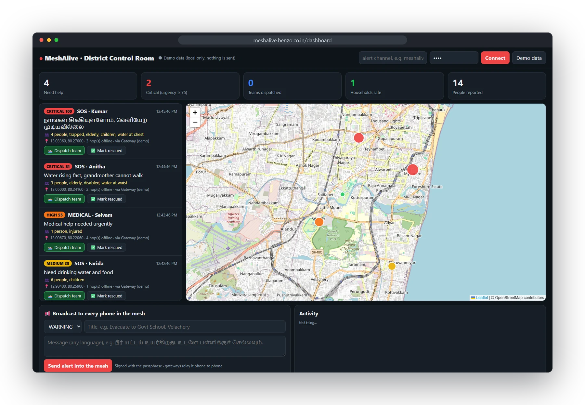
| Chat apps (Bridgefy, Briar) | LoRa radios (Meshtastic, goTenna) | MeshAlive | |
|---|---|---|---|
| Reaches rescuers | No | No | Live district dashboard |
| Help back to the victim | No | No | Dispatch + evacuation alerts |
| Prioritises urgent cases | No | No | Triage score 0–100 |
| No phone in range | Message waits | Message waits | Rescue carriers carry it out |
| Battery | Flooding drains phones | Flooding | Battery-aware routing |
| Extra hardware | None | ₹2,500+ per person | None |
| Language | English | English | Tamil & English |
Results from MeshAlive’s own routing engine. The planner and the field-trial recorder are built into the app.
Enter the area and the number of people with the app. The planner shows who can reach the control room, with and without rescue boats, and what it costs.
One flood-prone ward with the District Disaster Management Authority, local NDRF/SDRF boats as carriers, and the dashboard in the district EOC. We measure delivery rate and SOS-to-dispatch time.
Pre-monsoon install drives through schools, colleges, panchayats, urban local bodies and SHGs, guided by the planner’s adoption targets.
Distribution through the SDMA, integration with state EOCs, alerts aligned with the national Common Alerting Protocol, and more Indian languages.
The concept document, the submission answers, app screens and the working app.
Problem, solution, evidence, cost, impact and roadmap · 8 pages
Every key screen and the control-room dashboard · 3 pages
All SevaFirst portal fields, within the word limits
The MeshAlive story in slides
Install on 3 phones and try it offline · Android 8+
App, routing engine, dashboard and 49 tests
They are chat apps between phones. MeshAlive is a response system: triage-scored SOS, battery-aware routing, rescue carriers, a district dashboard, and dispatch messages and evacuation alerts back to people with no signal.
No. Phones talk directly over Bluetooth and Wi-Fi. Only one phone somewhere in the mesh, or a rescue carrier that reaches signal, needs internet to upload to the control room.
The SOS is stored and retried automatically, and rescue boats, NDRF teams and ambulances in carrier mode pick it up and carry it out. The district planner shows how many installs a ward needs.
Routing deliberately avoids phones with low battery, and only the best path transmits. In tests it used 147× fewer transmissions than flooding.
No. Control-room commands are signed with HMAC-SHA256, and phones reject anything unsigned, altered or stale. Message text is encrypted on the phone.
₹0 for citizens, rescuers and the control room, since it runs on phones and PCs that already exist. The main cost is the district awareness and installation drive.
Install MeshAlive on three phones, turn on airplane mode, then Bluetooth, and send a test SOS. Then open the control room and send help back.